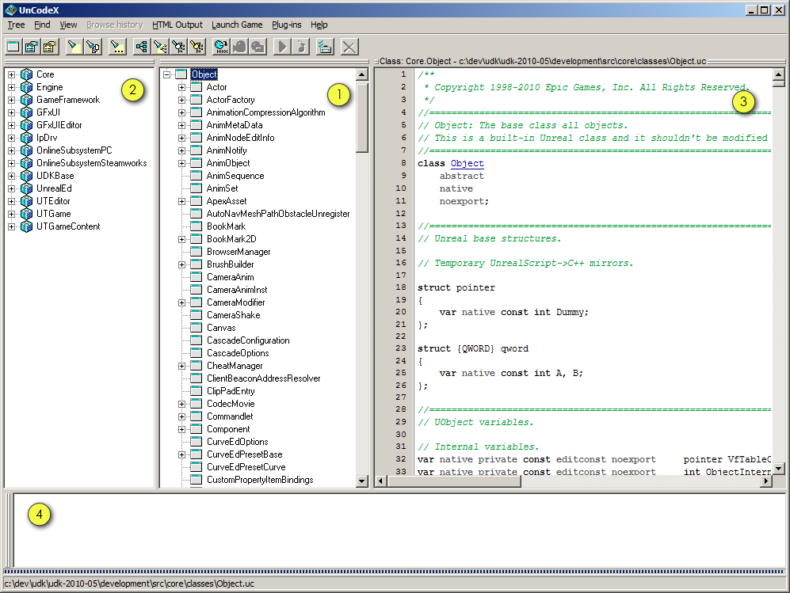
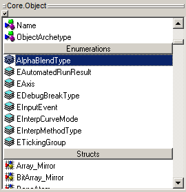
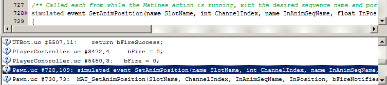

UDN
Search public documentation:
UnCodeX
日本語訳
中国翻译
한국어
Interested in the Unreal Engine?
Visit the Unreal Technology site.
Looking for jobs and company info?
Check out the Epic games site.
Questions about support via UDN?
Contact the UDN Staff
中国翻译
한국어
Interested in the Unreal Engine?
Visit the Unreal Technology site.
Looking for jobs and company info?
Check out the Epic games site.
Questions about support via UDN?
Contact the UDN Staff
UE3 Home > UnrealScript > UnCodeX
UnCodeX
Overview
Installation
- Get the latest version of UnCodeX from its project page.
- Execute the installer and follow the steps
- The first time you start UnCodeX it will prompt you to change the settings. Press ''yes'' to open the program settings window.
- The only required configuration is the ''Source Paths'' setting.
- Press the ''add'' button and select the folder that contains the UnrealScript code you want to include.
- For the UDK you should navigate to
c:\UDK\Development\Src - Close the settings window by pressing the "ok" button.
- UnCodeX will now prompt you to scan and analyse the the sources
- Press ''yes'' to scan and analyse
- This process might take some time depending on the amount of source files and the speed of your computer
- When you make structural changes, like adding new packages, you should rebuild and analyse tree. This can be done via the menu Tree > Rebuild & Analyse (Ctrl+B)
- UnCodeX is now ready to be used.
Usage
Main Window
Below is a screenshot of the main windows in it's default configuration. - The is the class tree. It shown the inheritance of all classes. It's the main part of the user interface and it's the only part you can not reposition or disable. Right-clicking this tree will show some additional functionality.
- This is the package tree. It shows the various packages and the classes it contain. You can easily switch between the two trees based on the select class using Ctrl+Tab.
- Source preview. This shown a read only, syntax highlighted version of the source code of a selected class. You can click on known UnrealScript classes to view the source code of that class.
- This is the log. Besides reporting various information like errors and warnings during source code analysis and program errors it is also used to display the full text search results.

The fifth element of the main window is hidden by default: Property Inspector (Ctrl+Alt+I).
This element shows the details of the currently selected class.
These details include the defined variables, structures, enums, constants, functions and states.
When you click one of these properties it will directly jump the source preview to the location where the property is defined in the source code.
You show and hide the various panels through the main menu under the ''View'' sub menu.
You can also move the panels to attach to different sides by dragging the the handles (two horizontal or vertical lines) on the top or left side of the panels.
And you can resize the panels by sliding the parts between the panels.
Searching
There are different methods to search through the UnrealScript code in UnCodeX. When one of the trees (class tree or package tree) has the focus you can start typing and it will automatically try to find the next class (or package) that starts with the text you just entered. It will start searching from the currently selected element. You can use ''Find > Find Next (F3)'' to find the next element that starts with the entered text (see the status bar of the application). Pressing escape will cancel the inline search. You can also find a class by opening the ''Find Class'' dialog (in the ''Find'' menu, or Ctrl+F). The third search functionality is a so-called ''Full Text'' search (Ctrl+T). The full text search allows you to search for text in all the source files. In the full text search you can use regular expressions (only the basic regular expressions functionality can be used). You can also limit the scope of source files to search, this will allow you to only search a hierarchical subset of the source code. The results of the full text search will be listed in the log window. Clicking these results will open the source file at the given location in the source previes, or double click it to open it in the configured editor. Game launching
Through the ''Launch game'' menu you are able to start a client or server instance of the game. The two options ''Run server'' and ''Join server'' can be configured through the settings menu. The ''Run ... (Ctrl+X)'' option in the ''Launch game'' menu provides more options to launch various instances of the game. It is basically a GUI to configure and and execute a commandline. You are also able to create some presets.Troubleshooting
Source code analysis
During source code analysis you might encounter the following warnings or errors:- Discarding token
- You can ignore this message. Sometimes the source code parser encounters characters it did not expect, but could safetly ignore.
- Empty package
- UnCodeX found a directory in one of the source paths that resembles an UnrealScript package, but it did not find any classes in it. When you later on do add classes to this package you will have to rebuild the tree.
- Orphan detected
- The mentioned class extends a class that was not found in the existing class tree. You either made a programming error, or you forgot to include the source path that contains the package with this class.
- Unhandled exception in class ...
- When an error like this happens during source code analysis it is mostlikely due to a serious error in the source code. This error is often followed by an history list, the last entry in the histor usually lists on what line things started to go wrong. But best way to find the error is to compile the code. If you get this error at any other time it is probably a bug in the program.